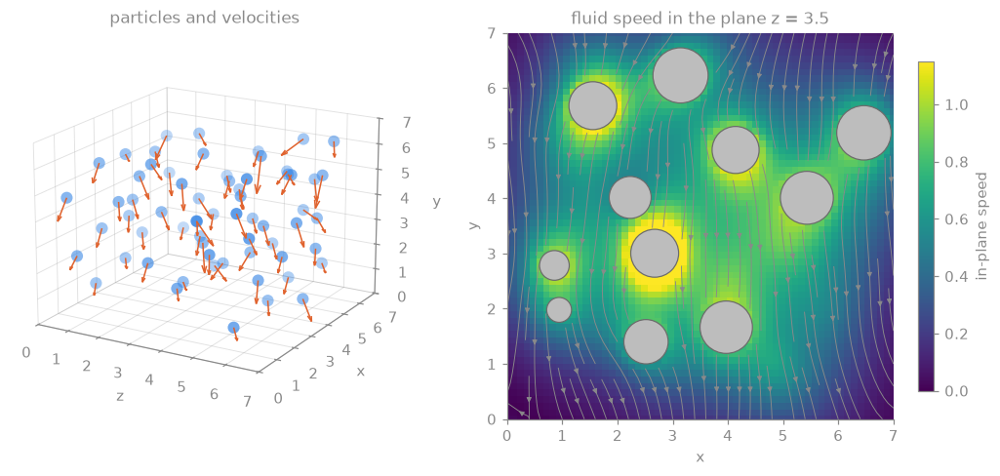

Setting up and a first equivariance check#
What you will learn
How to install the course environment and check that it works.
How every lesson finds the shared
course_utilspackage and applies the figure style.How to verify an equivariance claim numerically with one line, and what a failure looks like.
Prerequisites: Python and NumPy; a first look at PyTorch modules. No e3nn knowledge is needed yet. If you have never met irreps or equivariance, the MolSSI e3nn course explains them from the beginning; this lesson only uses the idea.
1. Install the environment#
The course runs on a laptop CPU. From the repository root:
python -m venv .venv && source .venv/bin/activate
pip install torch==2.8.0 --index-url https://download.pytorch.org/whl/cpu
pip install -r course/requirements.txt
jupyter-book build course/ # executes every lesson and writes course/_build/html
To work on a single lesson interactively, open its .md file in JupyterLab: thanks to
jupytext the MyST-Markdown file is the notebook.
Let us check the versions this book was built with.
import sys, platform
import numpy, scipy, matplotlib, torch, e3nn
print(f"python {sys.version.split()[0]} ({platform.system()})")
for mod in (numpy, scipy, matplotlib, torch, e3nn):
print(f"{mod.__name__:<10} {mod.__version__}")
print("CUDA available:", torch.cuda.is_available(), "(not needed for this course)")
python 3.12.13 (Linux)
numpy 2.5.5
scipy 1.18.1
matplotlib 3.11.2
torch 2.8.0+cpu
e3nn 0.6.0
CUDA available: False (not needed for this course)
2. Finding course_utils#
Every lesson imports one shared package, course_utils, which lives in the course/ folder. Jupyter Book
executes each notebook inside its own folder (for example course/part0_setup/), so the first cell of
every lesson walks up the directory tree until it finds the package. In later lessons this cell is hidden;
here it is shown once.
import pathlib
_root = pathlib.Path.cwd().resolve()
while not (_root / "course_utils").is_dir() and _root != _root.parent:
_root = _root.parent
sys.path.insert(0, str(_root))
import course_utils as cu
cu.set_style() # transparent figures with mid-tone colours (readable in light and dark mode)
print("course_utils", cu.__version__, "from the", _root.name + "/", "folder")
course_utils 0.1.0 from the course/ folder
The package contains:
module |
what it provides |
|---|---|
|
the toy suspension: exact one-sphere Stokes disturbances, self-consistent slip, network inputs |
|
random rotations and reflections, numerical symmetry checks |
|
|
|
attention from scratch: softmax, multi-head, masks, the transformer block |
|
Picard and Anderson solvers; the state update with a trained model |
|
a small training loop, R² and NRMSE, light/dark-friendly figures |
3. A first look at the toy problem#
Lessons never use private simulation data. Instead they generate a small toy suspension: spheres at random positions, each settling with its own velocity and dragging the fluid around it. Part I explains the physics and its simplifications; here we only check that generation and plotting work.
import numpy as np
import matplotlib.pyplot as plt
snap = cu.make_snapshot(n_particles=64, box=7.0, seed=0)
print(f"{snap.n} spheres, volume fraction {snap.config.volume_fraction:.3f}")
fig = plt.figure(figsize=(10, 4.3))
ax1 = fig.add_subplot(1, 2, 1, projection="3d")
ax2 = fig.add_subplot(1, 2, 2)
cu.plotting.particles_3d(snap.positions, snap.velocity, ax=ax1, scale=0.8, box=7.0, title="particles and velocities")
cu.plotting.field_slice(snap, ax=ax2, n=60, streamlines=True, title="fluid speed in the plane z = 3.5")
plt.tight_layout()
plt.show()
64 spheres, volume fraction 0.098

4. One line to check equivariance#
The models in this course are E(3)-equivariant: rotate or reflect the whole input, and the predicted velocity rotates or reflects with it,
We never take such a claim on trust. check_equivariance draws random orthogonal matrices (about half of them
with \(\det g = -1\), so reflections are always included), applies them to the inputs, and compares in float64.
The A0 model takes three tensors per query point and neighbour: scalars (unchanged by \(g\)), the particle state
direction \(e_j\) and the offset \(x_{fj}\) (both vectors).
import torch
from course_utils.models import MiniA0
from course_utils.equivariance import check_equivariance
torch.manual_seed(0)
scalars = torch.rand(8, 16, 3, dtype=torch.float64) # 8 query points, 16 neighbours
e_j = torch.nn.functional.normalize(torch.randn(8, 16, 3, dtype=torch.float64), dim=-1)
x_fj = 3 * torch.randn(8, 16, 3, dtype=torch.float64)
model = MiniA0(width=32, depth=2).double()
check_equivariance(model, (scalars, e_j, x_fj), ("scalar", "vector", "vector"), name="MiniA0");
PASS MiniA0: max error 1.1e-16 (tol 1e-12) [5 random g in O(3), det = [-1, 1]]
The error is at the level of float64 round-off (about \(10^{-16}\)): the symmetry holds exactly, by construction.
4.1 Failure before success#
A check that cannot fail teaches nothing. Here is a model that looks harmless but adds a learned constant
vector to its output, as an ordinary nn.Linear bias would. A fixed vector points the same way whatever we do to
the input, so it breaks rotation equivariance:
bias = torch.tensor([0.0, 0.1, 0.0], dtype=torch.float64)
broken = lambda s, e, x: model(s, e, x) + bias
try:
check_equivariance(broken, (scalars, e_j, x_fj), ("scalar", "vector", "vector"), name="MiniA0 + bias")
except AssertionError as err:
print("caught:", err)
FAIL MiniA0 + bias: max error 1.9e-01 (tol 1e-12) [5 random g in O(3), det = [-1, 1]]
caught: MiniA0 + bias: equivariance error 1.940e-01 >= tol 1.0e-12
This is why the vector layers of A0 have no bias. Lesson 02b returns to this point.
Summary#
The course runs on CPU;
jupyter-book build course/executes every lesson.Each lesson starts by locating
course_utilsand callingcu.set_style().check_equivariance(f, args, kinds)tests \(f(g\cdot x) = g\,f(x)\) for random \(g\in O(3)\), reflections included, in float64; it prints the largest error and raises if it exceeds the tolerance.An exactly equivariant model passes at round-off level (~1e-16); a single fixed vector is enough to fail.
Exercises#
Check that the output of
MiniA0is invariant to the order of the 16 neighbours, usingcu.check_permutation.The cross product of two vectors is a pseudovector: under a reflection it does not flip like an ordinary vector. Verify that
torch.linalg.cross(a, b)passescheck_equivariancewithout_kind="pseudovector"and fails without_kind="vector".Rerun the check of Section 4 with
proper=True(rotations only) on the cross product. Why does it now pass as a polar vector?
Solution 1
cu.check_permutation(model, (scalars, e_j, x_fj), axis=1, name="MiniA0")
The output is a plain sum of per-neighbour messages, and a sum does not depend on the order of its terms.
Solution 2
a, b = torch.randn(5, 3, dtype=torch.float64), torch.randn(5, 3, dtype=torch.float64)
cross = lambda u, v: torch.linalg.cross(u, v)
check_equivariance(cross, (a, b), ("vector", "vector"), out_kind="pseudovector", name="cross")
try:
check_equivariance(cross, (a, b), ("vector", "vector"), out_kind="vector", name="cross as vector")
except AssertionError as err:
print("caught:", err)
For any orthogonal \(g\), \((ga)\times(gb) = \det(g)\, g(a\times b)\). The extra factor \(\det g = -1\) appears only for reflections.
Solution 3
With proper=True every \(g\) has \(\det g = +1\), so \(\det(g)\,g(a\times b) = g(a\times b)\) and the cross product
behaves like an ordinary vector. Testing only rotations would miss this difference, which is why the course’s
checks include reflections by default. A model that used cross products would therefore be SO(3)- but not
O(3)-equivariant.
References#
MolSSI e3nn course, Introduction: irreps, equivariance and the e3nn library from first principles.
M. Geiger and T. Smidt, e3nn: Euclidean Neural Networks, arXiv:2207.09453 (2022).